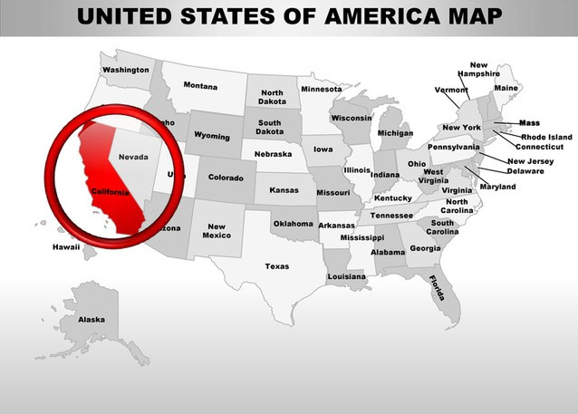

Californië
San Francisco
De leukste stad van de Verenigde Staten. Zo wordt San Francisco vaak genoemd door mensen die stad bezocht hebben. Voor Amerikaanse begrippen is deze in het noorden van de staat California gelegen stad veel relaxter dan andere steden. Een hoge kwaliteit van leven, verdraagzaamheid en acceptatie van wie ‘anders’ is zijn elementen die op allerlei manieren in het dagelijks leven van San Francisco verweven zitten. Niet voor niets dat San Francisco ook wel de ‘gay capital of the United States’ genoemd wordt. Als je je als toerist door de stad begeeft voel je inderdaad ook dat het hier allemaal wat beter is dan in veel andere Amerikaanse steden. De stad is duidelijk zachter, maar nog wel echt stads.
Alcatraz
Het eiland Alcatraz Wanneer je een bezoek brengt aan San Francisco zijn er enkele plaatsen waar je zeker geweest moet zijn. Eén van deze plaatsen is zeker ook Alcatraz. Dit van oorsprong militaire fort stamt uit het midden van de 19e eeuw en is vooral bekend geworden als één van meest zwaarbewaakte gevangenissen. Eerst als militaire gevangenis en later als een gevangenis waar de meest beruchte Amerikaanse misdadigers zaten opgesloten. Mede door zijn locatie op een rotsachtig eiland in de Baai van San Francisco en het feit dat er vele films zijn gemaakt over de periode dat Alcatraz een gevangenis was maken dat deze plek weinig nodig heeft om je fantasie de vrije loop te laten. Een bezoek aan deze site een onvergetelijke ervaring.
Los Angeles
Los Angeles Rodeo Drive, Venice Beach, Hollywood en Santa Monica. De stad Los Angeles is één grote Walk of Fame. Hier treed je in de voetsporen van 's werelds beroemdste film- en televisiesterren. 'Love it or leave it'. Dat is het motto van L.A. De metropool ligt in het westen van California, aan de Stille Oceaan. Dwars door de stad loopt de Los Angeles rivier, die uitmondt in zee. De stad, die ook wel de City of Angels wordt genoemd, zit vol bezienswaardigheden en verschillende wijken zoals Hollywood, Beverly Hills en Santa Monica.